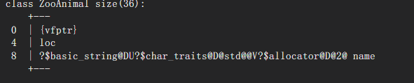
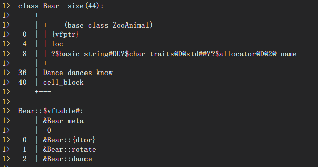

<!DOCTYPE html>
<html lang="zh-CN">
<head><meta name="generator" content="Hexo 3.9.0">
  <meta charset="utf-8">
  <meta content="width=device-width, initial-scale=1.0, maximum-scale=1.0, user-scalable=0" name="viewport">
  
  <title itemprop="name">【深度探索C++对象模型】读书笔记 | Lu&#39;s Blog</title>
  
    <link rel="shortcut icon" href="/images/favicon.ico">
  
  <meta http-equiv="x-dns-prefetch-control" content="on">
  <link rel="stylesheet" href="https://fonts.googleapis.com/css?family=Noto+SerifMerriweather|Merriweather+Sans|Source+Code+Pro|Ubuntu:400,700|Noto+Serif+SC" media="all">
  <link rel="dns-prefetch" href="//cdn.jsdelivr.net">
  <link rel="stylesheet" id="saukra_css-css" href="/css/style.css" type="text/css" media="all">
  <link rel="stylesheet" href="/css/lib.min.css" media="all">
  <link rel="stylesheet" href="/css/font.css" media="all">
  <link rel="stylesheet" href="/css/insight.css" media="all">
  <link rel="stylesheet" href="/css/jquery.fancybox.min.css" media="all">
  <link rel="stylesheet" href="/css/zoom.css" media="all">
  <link rel="stylesheet" type="text/css" href="/css/sharejs.css">
<!--   <link rel="stylesheet" id="saukra_css-css" href="https://2heng.xin/wp-content/cache/autoptimize/css/autoptimize_ad42a61f4c7d4bdd9f91afcff6b5dda5.css
" type="text/css" media="all"> -->
  <script>
  /*Initial Variables*/
  var mashiro_option = new Object();
  var mashiro_global = new Object();
  mashiro_option.NProgressON = true;
  /* 
   * 邮箱信息之类的东西可以填在这里，这些js变量基本都作用于sakura-app.js
   * 这样的设置仅是为了方便在基于PHP开发的主题中设置js变量，既然移植到了Node上，我想或许可以精简这一逻辑吧
   */
  mashiro_option.email_domain = "";
  mashiro_option.email_name = "";
  mashiro_option.cookie_version_control = "";
  mashiro_option.qzone_autocomplete = false;
  mashiro_option.site_name = "Lu'sBlog";
  mashiro_option.author_name = "Blog";
  mashiro_option.site_url = "";
  mashiro_option.v_appId = "GyC3NzMvd0hT9Yyd2hYIC0MN-gzGzoHsz";
  mashiro_option.v_appKey = "mgOpfzbkHYqU92CV4IDlAUHQ";
  mashiro_option.mathjax = "0";
  mashiro_option.qq_api_url = "https://api.mashiro.top/qqinfo/"; 
  mashiro_option.qq_avatar_api_url = "https://api.mashiro.top/qqinfo/";

  // mashiro_option.jsdelivr_css_src = "https://cdn.jsdelivr.net/gh/moezx/cdn@3.4.5/css/lib.min.css";
  // mashiro_option.float_player_on = true;

  /*End of Initial Variables*/
  </script>
  <script type="text/javascript">
  var bg = "https://r.photo.store.qq.com/psb?/V10cLlav0ErH57/KiQozcEVoJgH7LfBijpbzEfIK8G3zajASE3efG.ey2k!/r/dL8AAAAAAAAAnull&amp;bo=gAc4BIAHOAQDCSw!&amp;rf=photolist&amp;t=5_yake_qzoneimgout.png".split(",");
  var bgindex = Math.floor(Math.random()*bg.length);
  if (!!window.ActiveXObject || "ActiveXObject" in window) { //is IE?
    alert('朋友，IE浏览器未适配哦~');
  }
  </script>
  <style type="text/css">
  .hljs-ln{border-collapse:collapse}.hljs-ln td{padding:0}.hljs-ln-n:before{content:attr(data-line-number)}
  </style>
  <style type="text/css">.site-top .lower nav{display:block !important;}.author-profile i,.post-like a,.post-share .show-share,.sub-text,.we-info a,span.sitename,.post-more i:hover,#pagination a:hover,.post-content a:hover,.float-content i:hover{color:#FE9600}.feature i,.download,.navigator i:hover,.links ul li:before,.ar-time i,span.ar-circle,.object,.comment .comment-reply-link,.siren-checkbox-radio:checked + .siren-checkbox-radioInput:after{background:#FE9600}::-webkit-scrollbar-thumb{background:#FE9600}.download,.navigator i:hover,.link-title,.links ul li:hover,#pagination a:hover,.comment-respond input[type='submit']:hover{border-color:#FE9600}.entry-content a:hover,.site-info a:hover,.comment h4 a,#comments-navi a.prev,#comments-navi a.next,.comment h4 a:hover,.site-top ul li a:hover,.entry-title a:hover,#archives-temp h3,span.page-numbers.current,.sorry li a:hover,.site-title a:hover,i.iconfont.js-toggle-search.iconsearch:hover,.comment-respond input[type='submit']:hover{color:#FE9600}.comments .comments-main{display:block !important;}.comments .comments-hidden{display:none !important;}background-position:center center;background-attachment:inherit;}
  </style>
</head>
</html>
<body class="page-template page-template-user page-template-page-analytics page-template-userpage-analytics-php page page-id-1297 chinese-font serif isWebKit">
  <div class="scrollbar" id="bar">
  </div>
  <a href="#" class="cd-top faa-float animated"></a>
  <section id="main-container">
    <div class="headertop filter-dot">
  <figure id="centerbg" class="centerbg">
    <div class="focusinfo no-select">
      <div class="header-info">
        <p>Welcome to the Machine</p>
        <div class="top-social_v2">
          <li id="bg-pre">
            
          </li>
          
            
              
                <li>
                  <a href="http://github.com/simon-lu" target="_blank" class="social-github" title="github">
                    
                  </a>
                </li>
              
            
              
                <li>
                  <a href="https://music.163.com/#/user/home?id=42086394" target="_blank" class="social-github" title="wangyiyun">
                    
                  </a>
                </li>
              
            
              
                <li>
                  <a href="https://www.zhihu.com/people/uu-ll-98/" target="_blank" class="social-github" title="zhihu">
                    
                  </a>
                </li>
              
            
              
                <li>
                  <a href="mailto:wq.lu@outlook.com" target="_blank" class="social-github" title="email">
                    
                  </a>
                </li>
              
            
              
                <li class="wechat">
                  <a href="/#">
                    
                  </a>
                  <div class="wechatInner">
                    
                  </div>
                </li>
              
            
          
          <li id="bg-next">
            
          </li>
        </div>
      </div>
    </div>
  </figure>
  <div id="video-container" style="">
    <video style="object-fit: fill" id="bgvideo" class="video" video-name="" src="" width="auto" preload="auto">
    </video>
    <div id="video-btn" class="loadvideo videolive">
    </div>
    <div id="video-add">
    </div>
    <div class="video-stu">
    </div>
  </div>
  <div class="headertop-down faa-float animated" onclick="headertop_down()">
    <span>
      <i class="fa fa-chevron-down" aria-hidden="true">
      </i>
    </span>
  </div>
</div>
    <div id="page" class="site wrapper">
      <header class="site-header no-select gizle sabit" role="banner">
  <div class="site-top">
    <div class="site-branding">
      <span class="site-title">
        <span class="logolink moe-mashiro">
          <a href="/">
            <span class="sakurasono">Lu&#39;s</span>
            <span class="shironeko">Blog</span>
          </a>
        </span>
      </span>
    </div>
    <div class="searchbox search-form-submit">
      <i class="iconfont js-toggle-search iconsearch icon-search">
      </i>
    </div>
    <div id="show-nav" class="showNav mobile-fit">
      <div class="line line1">
      </div>
      <div class="line line2">
      </div>
      <div class="line line3">
      </div>
    </div>
    <div class="lower-cantiner">
      <div class="lower">
        <nav class="mobile-fit-control hide">
          <ul id="menu-new" class="menu">
            
              <li>
                <a href="/">
                  <span class="faa-parent animated-hover">
                    <i class="fa  fa-fort-awesome faa-shake" aria-hidden="true"></i>
                    首页
                  </span>
                </a>
                
              </li>
            
              <li>
                <a href="/archives">
                  <span class="faa-parent animated-hover">
                    <i class="fa  fa-archive faa-shake" aria-hidden="true"></i>
                    归档
                  </span>
                </a>
                
                  <ul class="sub-menu">
                    
                      <li>
                        <a href="/categories/技术/">
                          <i class="fa fa-code" aria-hidden="true"></i>
                          技术
                        </a>
                      </li>
                    
                      <li>
                        <a href="/categories/生活/">
                          <i class="fa fa-file-text-o" aria-hidden="true"></i>
                          生活
                        </a>
                      </li>
                    
                      <li>
                        <a href="/categories/资源/">
                          <i class="fa fa-cloud-download" aria-hidden="true"></i>
                          资源
                        </a>
                      </li>
                    
                      <li>
                        <a href="/categories/随想/">
                          <i class="fa fa-commenting-o" aria-hidden="true"></i>
                          随想
                        </a>
                      </li>
                    
                      <li>
                        <a href="/categories/转载/">
                          <i class="fa fa-book" aria-hidden="true"></i>
                          转载
                        </a>
                      </li>
                    
                  </ul>
                
              </li>
            
              <li>
                <a href="javascript:;">
                  <span class="faa-parent animated-hover">
                    <i class="fa  fa-list-ul faa-vertical" aria-hidden="true"></i>
                    清单
                  </span>
                </a>
                
                  <ul class="sub-menu">
                    
                      <li>
                        <a href="/tags/悦读/">
                          <i class="fa fa-th-list faa-bounce" aria-hidden="true"></i>
                          书单
                        </a>
                      </li>
                    
                      <li>
                        <a href="/movie/">
                          <i class="fa fa-film faa-vertical" aria-hidden="true"></i>
                          电影
                        </a>
                      </li>
                    
                      <li>
                        <a href="/music/">
                          <i class="fa fa-headphones" aria-hidden="true"></i>
                          歌单
                        </a>
                      </li>
                    
                      <li>
                        <a href="/tags/图集/">
                          <i class="fa fa-photo" aria-hidden="true"></i>
                          图集
                        </a>
                      </li>
                    
                  </ul>
                
              </li>
            
              <li>
                <a href="/comment/">
                  <span class="faa-parent animated-hover">
                    <i class="fa  fa-pencil-square-o faa-tada" aria-hidden="true"></i>
                    留言板
                  </span>
                </a>
                
              </li>
            
              <li>
                <a href="/links/">
                  <span class="faa-parent animated-hover">
                    <i class="fa  fa-link faa-shake" aria-hidden="true"></i>
                    友人帐
                  </span>
                </a>
                
              </li>
            
              <li>
                <a href="/donate/">
                  <span class="faa-parent animated-hover">
                    <i class="fa  fa-heart faa-pulse" aria-hidden="true"></i>
                    赞赏
                  </span>
                </a>
                
              </li>
            
              <li>
                <a href="/">
                  <span class="faa-parent animated-hover">
                    <i class="fa  fa-leaf faa-wrench" aria-hidden="true"></i>
                    关于
                  </span>
                </a>
                
                  <ul class="sub-menu">
                    
                      <li>
                        <a href="/about/">
                          <i class="fa fa-meetup" aria-hidden="true"></i>
                          我？
                        </a>
                      </li>
                    
                      <li>
                        <a href="/theme-sakura/">
                          <i class="fa iconfont icon-sakura" aria-hidden="true"></i>
                          主题
                        </a>
                      </li>
                    
                      <li>
                        <a href="/lab/">
                          <i class="fa fa-cogs" aria-hidden="true"></i>
                          Lab
                        </a>
                      </li>
                    
                  </ul>
                
              </li>
            
              <li>
                <a href="/atom.xml">
                  <span class="faa-parent animated-hover">
                    <i class="fa  fa-rss faa-pulse" aria-hidden="true"></i>
                    RSS
                  </span>
                </a>
                
              </li>
            
          </ul>
        </nav>
      </div>
    </div>
  </div>
</header>

      <link rel="stylesheet" type="text/css" href="/css/sharejs.css">
<link rel="stylesheet" href="https://cdnjs.cloudflare.com/ajax/libs/tocbot/4.4.2/tocbot.css">
<div class="pattern-center-blank"></div>

  <div class="pattern-center single-center">
    <!-- 有配图默认渲染第一张 -->
    <div class="pattern-attachment-img lazyload" style="background-image: url(http://r.photo.store.qq.com/psb?/V10cLlav0ErH57/7YOoyXKr7n2UPKVgo7ihcnIvn3w*fUKT5J3H8WI7wRI!/r/dE0BAAAAAAAA);" src="https://cdn.jsdelivr.net/gh/honjun/cdn@1.6/img/loader/orange.progress-bar-stripe-loader.svg" data-src="http://r.photo.store.qq.com/psb?/V10cLlav0ErH57/7YOoyXKr7n2UPKVgo7ihcnIvn3w*fUKT5J3H8WI7wRI!/r/dE0BAAAAAAAA">
    </div>
    <header class="pattern-header single-header">
      <h1 class="entry-title">
      【深度探索C++对象模型】读书笔记</h1>
      <p class="entry-census">
        <span class="bull">
        ·</span>
        2019-5-6<span class="bull">
        ·</span>
      <span id="busuanzi_value_page_pv"></span>次阅读</p>
    </header>
  </div>

  <div id="content" class="site-content">
  <div id="primary" class="content-area">
    <main id="main" class="site-main" role="main">
      <article id="post-1" class="post-1 post type-post status-publish format-standard has-post-thumbnail hentry category-uncategorized">
        <div class="toc"></div>
        <!--<div class="toc-entry-content"><!-- 套嵌目录使用（主要为了支援评论）-->
        <!-- 
          <header class="entry-header">
            <h1 class="entry-title">【深度探索C++对象模型】读书笔记</h1>
            <p class="entry-census">&nbsp;·&nbsp;2019-5-6&nbsp;·&nbsp;<span id="busuanzi_value_page_pv"></span>次阅读</p></p>

            <hr>
          </header>
         -->
        <div class="entry-content">
          <h2 id="第一章-关于对象"><a href="#第一章-关于对象" class="headerlink" title="第一章 关于对象"></a>第一章 关于对象</h2><p>关于封装后的布局成本<br>封装后Point3d并没有增加成本，data member直接内含在每一个class object中，member function不再object中，每一个non-inline member function只会诞生一个函数实例。每一个inline function则会在每一个使用者身上产生一个实例。</p>
<p>C++的布局以及存取时间上的额外负担是由virtual引起的，主要是virtual function和virtual base class。</p>
<h3 id="C-对象模式"><a href="#C-对象模式" class="headerlink" title="C++对象模式"></a>C++对象模式</h3><p>class data member： static和nonstatic<br>class member function ：static、nonstatic和virtual</p>
<ul>
<li>简单对象模型<br>  每一个data member或function member都有一个自己的slot</li>
<li>表格驱动模型<br>  一个data member table和一个member function table，class object本身内含指向这两个表的指针</li>
<li>C++对象模型</li>
</ul>
<h3 id="关键词的差异"><a href="#关键词的差异" class="headerlink" title="关键词的差异"></a>关键词的差异</h3><p>C所支持的struct和C++支持的class有一个观念的差异，但是关键词本身不提供这种差异，struct默认是有一个public接口的声明，但是也可以替代class声明public、private、protect</p>
<p>C struct在C++中的一个合理用途，当你要传递“一个复杂的class object的全部或部分”到某个C函数去时，struct声明可以讲数据封装起来， 并保证拥有与C兼容的空间布局。注：这种保证只在组合的情况下存在，如果是“继承”而不是“组合”，编译器会决定是否有额外的data member被安插到base struct subobject之中。</p>
<h3 id="对象的差异"><a href="#对象的差异" class="headerlink" title="对象的差异"></a>对象的差异</h3><ul>
<li>程序模型</li>
<li>抽象数据模型 (ADT)</li>
<li>面向对象模型（OO）</li>
</ul>
<p>纯粹以一种paradigm写程序，有助于整体的良好稳固，混合了多种，会带来一些不好的后果。<br>如完成某种多态时，虽然可以直接或间接处理继承体系中的一个base class object，但只有通过pointer或reference的间接处理，才支持OO程序设计所需的多态性质。<br>ADT中，程序员处理的是一个拥有固定而单一类型的实例，它在编译期就已经完全定义好了。</p>
<p>C++以下列方法支持多态：</p>
<ol>
<li>经由一组隐式的转化操作，例如把一个derived class指针转化为一个指向其public base type指针</li>
<li>经由virtual function机制</li>
<li>经由dynamic_cast和typeid运算符</li>
</ol>
<p>一个class object的大小：</p>
<ol>
<li>nonstatic data member的总和大小</li>
<li>由于alignemt的指针需求而填补(padding)上去的空间</li>
<li>由于virtual而由内部产生的任何额外负担</li>
</ol>
<p>“指针类型”会教导编译器如何解释某个特定地址的内存内容及其大小<br>这也是为什么一个类型为void*的只能够持有一个地址，而不能通过它操作所指之object的缘故</p>
<pre><code class="c++">class ZooAnimal {
public:
    ZooAnimal();
    virtual ~ZooAnimal();
    virtual void rotate();
protected:
    int loc;
    string name;
};
</code></pre>
<p>在VS中查看某个类的内存布局，在project Property-&gt;Configuration Properties-&gt;C/C++-&gt;Command Line写入<em>/d1 reportSingleClassLayoutZooAnimal</em>，build后就可以在输出中看到此类的内存布局<br>所有类的内存布局命令为<em>/d1 reportAllClassLayout</em><br><br>由此可见，string默认大小为28bytes</p>
<pre><code class="c++">class Bear : public ZooAnimal {
public:
    Bear();
    ~Bear();
    void rotate();
    virtual void dance();
protected:
    enum Dance {};
    Dance dances_know;
    int cell_block;
};
</code></pre>
<p></p>
<h2 id="第二章-构造函数语意学"><a href="#第二章-构造函数语意学" class="headerlink" title="第二章 构造函数语意学"></a>第二章 构造函数语意学</h2><h3 id="Default-Constructor的构造操作"><a href="#Default-Constructor的构造操作" class="headerlink" title="Default Constructor的构造操作"></a>Default Constructor的构造操作</h3><p>什么是默认构造函数？是可以不用实参进行调用的构造函数，包含两种情况：</p>
<ol>
<li>没有带明显形参的构造函数（this指针）</li>
<li>提供了默认实参的构造函数 </li>
</ol>
<blockquote>
<p>default constructors 在需要的时候被编译器产生出来</p>
</blockquote>
<p>区分被编译器需要和被程序员需要，例如下例：</p>
<pre><code class="c++">class A {
public:
    bool isTrue;
    int num;
};
int main() {
    A a;
    if (a.isTrue)
        cout &lt;&lt; a.num;
    return 0;
}
</code></pre>
<p>上面代码中，编译器不会为类合成默认构造函数，这种“被需要”是对程序员来说的</p>
<p>以下四种情况的类，编译器总是需要默认构造函数来完成某些工作：</p>
<ol>
<li><p>“带有Default Constructor”的Member Class Object<br> 如果一个class没有任何constructor，但它内含一个member object，而后者有default constructor，那么编译器就需要为该class合成出一个default constructor，不过这个合成操作只有在constructor真正需要被调用时才会发生</p>
<p>  编译器为了避免合成多个default constructor，会把合成的default constructor、copy constructor、destructor、assignment copy operator都以inline方式完成，如果函数太复杂，不适合做成inline，就会合成一个explict non-line static实例。</p>
<p> 如果有多个class member objects，会按照member声明的顺序，调用每一个member所惯量的default constructor，这些代码会安插在explict user code前面。</p>
</li>
<li><p>“带有Default Constructor”的Base Class</p>
<p>如果一个没有任何constructor的class派生自一个“带有default constructor”的base class，此class的default constructor需要合成出来。它将调用base classes的default constructor（根据它们的声明顺序）。</p>
<p>如果设计者提供了多个constructors，但都没有default constructor，编译器不会合成一个新的default constructor，而是会将必要的default constructor的代码加入每一个构造函数中去。</p>
<p>如果同时存在“带有default constructors”的member object，那些default constructor也会被调用——在所有base class constructor都被调用后。</p>
</li>
<li><p>“带有一个virtual function”的class</p>
<p>两种情况：类本身定义了自己的虚函数和类从继承体系中继承了虚函数（成员函数一旦被声明为虚函数，继承不会改变虚函数的“虚性质”）</p>
<p>每个含有虚函数的类对象都有一个虚表指针vptr，编译器需要对bptr设置初值来满足虚函数机制的正确运行，编译器会把这个设置初值的操作放在默认构造函数中。对于没声明任何construtor的class，编译器会默认合成一个default constructor，有的话，则是插入一些代码在constructor中。</p>
</li>
<li><p>“带有一个virtual base class”的class</p>
<p> 虚基类的概念存在于类与类之间，是一种相对的概念。例如类A虚继承于类X，则对于A来说，类X是类A的虚基类，而不能说类X就是一个虚基类。</p>
<p> virtual base class实现的共同点都是必须使virtual base class在每一个derived class object中的位置，能够于执行期准备妥当。</p>
<p> 需要一个指针__vbcX，指向virtual base class X</p>
</li>
</ol>
<p>以上四种情况，总结起来就是：</p>
<ol>
<li>调用对象成员或基类的默认构造函数</li>
<li>为对象初始化虚表指针或虚基类指针</li>
</ol>
<p>下面是两种常见的误解：</p>
<ol>
<li>如果class没有定义default constructor，就会被合成出来一个</li>
<li>编译器合成的default constructor会对显式设定“class内每一个data member的默认值”</li>
</ol>
<h3 id="Copy-Constructor的操作"><a href="#Copy-Constructor的操作" class="headerlink" title="Copy Constructor的操作"></a>Copy Constructor的操作</h3><p>如果class没有声明copy constructor，内部是使用default memberwise initialization来完成的，拷贝data member的值（例如指针地址，不拷贝内容），对于成员对象，递归实行memberwise initialization。</p>
<blockquote>
<p>copy constructors只有在必要的时候才有编译器产生出来</p>
</blockquote>
<p>“必要”意指class不展现bitwise copy sematics时，同样也是四种情况</p>
<ol>
<li>含有“带有copy constructor”属性的类</li>
<li>基类“带有copy constructor”</li>
<li>带有一个或多个virtual function （需要调整vptr的指针）<pre><code class="c++"> ZooAnimal franny = yogi; // 发生了slice，franny中vptr应该调整，不能指向Bear的虚表
</code></pre>
</li>
<li>带有一个或多个virtual base class<br> 设定virtual base class pointer/offset</li>
</ol>
<h3 id="程序转化语意学"><a href="#程序转化语意学" class="headerlink" title="程序转化语意学"></a>程序转化语意学</h3><p><a href>关于NRV优化</a></p>
<p>是否需要copy constructor？大量的传值操作，编译器支持NRV的情况提供<br>直接使用memcpy效率更高，但对于含有virtual function或内含virtual base class，不可使用memset和memcpy，会修改编译器产生的初值。</p>
<h3 id="成员们的初始化队伍"><a href="#成员们的初始化队伍" class="headerlink" title="成员们的初始化队伍"></a>成员们的初始化队伍</h3><p>必须使用member initialization的四种情况：</p>
<ol>
<li>初始化一个reference member</li>
<li>初始化一个const member</li>
<li>调用一个base class的constructor，而它拥有一组参数</li>
<li>调用一个member class的constructor，而它拥有一组参数</li>
</ol>
<p>初始化顺序是按照class中member的声明顺序决定的<br>编译器一一操作initialization list，以适当顺序在constructor内安插初始化操作，并且在任何explict user code之前。</p>
<h2 id="第三章-Data语意学"><a href="#第三章-Data语意学" class="headerlink" title="第三章 Data语意学"></a>第三章 Data语意学</h2><p>参考链接：<br><a href="https://www.cnblogs.com/QG-whz/p/4676481.html" target="_blank" rel="noopener">C++ 合成默认构造函数的真相</a></p>

        </div>
        <!-- .entry-content -->
        <div class="single-reward">
          <div class="reward-open">赏<div class="reward-main">
              <ul class="reward-row">
                <li class="alipay-code"></li>
                <li class="wechat-code"></li>
              </ul>
            </div>
          </div>
        </div>
        <div style="text-align:center; width: 100%" class="social-share share-mobile" data-disabled="diandian, tencent"></div>
        <footer class="post-footer">
          <div class="post-lincenses"><a href="https://creativecommons.org/licenses/by-nc-sa/4.0/deed.zh" target="_blank" rel="nofollow"><i class="fa fa-creative-commons" aria-hidden="true"></i> 知识共享署名-非商业性使用-相同方式共享 4.0 国际许可协议</a></div>
          <div class="post-tags">
          </div>
          <div class="post-share">
            <div class="social-share sharehidden share-component"></div>
            <i class="iconfont show-share icon-forward"></i>
          </div>
        </footer><!-- .entry-footer -->
      </article>
      <!-- #post-## -->
      <div class="toc" style="background: none;"></div>
      <section class="post-squares nextprev">
        
          
            <div class="post-nepre half previous">
          
            <a href="/2019/05/18/linux服务器端开发常用的命令/" rel="prev">
              <div class="background">
                
              </div>
              <span class="label">
              Previous Post</span>
              <div class="info">
                <h3>
                linux服务器端开发常用的命令</h3>
                <hr>
              </div>
            </a>
          </div>
        
        
          
            <div class="post-nepre half next">
          
            <a href="/2019/03/11/调试LeetCode-107所得到的教训/" rel="next">
              <div class="background">
                
              </div>
              <span class="label">
              Next Post</span>
              <div class="info">
                <h3>
                LeetCode中遇到的问题</h3>
                <hr>
              </div>
            </a>
          </div>
        
      </section>
      
<section id="comments">
  <div id="disqus_thread"></div>
    <script type="text/javascript">
    /* * * CONFIGURATION VARIABLES: EDIT BEFORE PASTING INTO YOUR WEBPAGE * * */
    var disqus_shortname = 'simon-lu'; // required: replace example with your forum shortname
    /* * * DON'T EDIT BELOW THIS LINE * * */
    (function() {
      var dsq = document.createElement('script'); dsq.type = 'text/javascript'; dsq.async = true;
      dsq.src = '//' + disqus_shortname + '.disqus.com/embed.js';
      (document.getElementsByTagName('head')[0] || document.getElementsByTagName('body')[0]).appendChild(dsq);
    })();
  </script>
  <noscript>Please enable JavaScript to view the <a href="https://disqus.com/?ref_noscript">comments powered by Disqus.</a></noscript>
</section>

    </main><!-- #main -->
  </div><!-- #primary -->
</div>


    </div>    
    <div class="ins-search">
    <div class="ins-search-mask"></div>
    <div class="ins-search-container">
        <div class="ins-input-wrapper">
            <input type="text" class="ins-search-input" placeholder="请输入关键词..."/>
            <span class="ins-close ins-selectable"><i class="fa fa-times-circle"></i></span>
        </div>
        <div class="ins-section-wrapper">
            <div class="ins-section-container"></div>
        </div>
    </div>
</div>
<script>
(function (window) {
    var INSIGHT_CONFIG = {
        TRANSLATION: {
            POSTS: '文章',
            // PAGES: '页面',
            CATEGORIES: '分类',
            TAGS: '标签',
        },
        ROOT_URL: '/',
        CONTENT_URL: '/content.json',
    };
    window.INSIGHT_CONFIG = INSIGHT_CONFIG;
})(window);
</script>
    <!-- <footer id="footer">
  
  <div class="outer">
    <div id="footer-info" class="inner">
      &copy; 2019 simonlu<br>
      powered_by <a href="http://hexo.io/" target="_blank">Hexo</a>
    </div>
  </div>
</footer> -->
<footer id="colophon" class="site-footer" role="contentinfo">
  <div class="site-info">
    <div class="footertext">
      <div class="img-preload">
        
        
      </div>
      <p style="color: #666666;">&copy 2018</p>
    </div>
    <div class="footer-device">
    <p style="font-family: 'Ubuntu', sans-serif;">
        <span style="color: #b9b9b9;">Theme <a href="https://github.com/honjun/hexo-theme-sakura" target="_blank" style="color: #b9b9b9;;text-decoration: underline dotted rgba(0, 0, 0, .1);">Sakura</a> <i class="iconfont icon-sakura rotating" style="color: #ffc0cb;display:inline-block"></i> by <a href="https://2heng.xin/" target="_blank" style="color: #b9b9b9;;text-decoration: underline dotted rgba(0, 0, 0, .1);">Mashiro</a>&<a href="https://www.hojun.cn/" target="_blank" style="color: #b9b9b9;;text-decoration: underline dotted rgba(0, 0, 0, .1);">Hojun</a>, Powered by Hexo, Hosted by Coding Pages</a>
        </span>
      </p>
    </div>
  </div><!-- .site-info -->
</footer>


<!-- <script src="/js/tocbot.js"></script> -->
<script type="text/javascript" src="/js/lib.min.js"></script>
<script src="https://cdn.jsdelivr.net/npm/clipboard@2/dist/clipboard.min.js"></script>
<script type="text/javascript" src="/js/InsightSearch.js"></script>
<script type="text/javascript" src="/js/jquery.fancybox.min.js"></script>
<script type="text/javascript" src="/js/zoom.min.js"></script>
<script type="text/javascript" src="/js/sakura-app.js"></script>
<script src="//cdn1.lncld.net/static/js/3.0.4/av-min.js"></script>
<script src='//unpkg.com/valine@1.3.4/dist/Valine.min.js'></script>
<script src="//cdn.bootcss.com/jquery/2.1.0/jquery.min.js" type="text/javascript"></script>
<!-- 不蒜子 网页计数器 -->
<script src="//busuanzi.ibruce.info/busuanzi/2.3/busuanzi.pure.mini.js"></script>
<!-- <script src="https://cdnjs.cloudflare.com/ajax/libs/tocbot/4.4.2/tocbot.min.js"></script> -->
<script type="text/javascript">
/* <![CDATA[ */
if (/Android|webOS|iPhone|iPod|BlackBerry/i.test(navigator.userAgent)) {
  var Poi = {"pjax":"1","movies":{"url": "https://cdn.jsdelivr.net/gh/honjun/hojun@1.2","name":"Unbroken.mp4","live":"close"},"windowheight":"fixed","codelamp":"close","ajaxurl":"","order":"asc","formpostion":"bottom"};
} else {
  var Poi = {"pjax":"1","movies":{"url": "https://cdn.jsdelivr.net/gh/honjun/hojun@1.2","name":"Unbroken.mp4","live":"open"},"windowheight":"auto","codelamp":"close","ajaxurl":"","order":"asc","formpostion":"bottom"};
}
/* ]]> */

</script>
<script>
$(document).ready(function() {
  if ($(".toc").length > 0 && document.body.clientWidth > 1200) {
    if ($(".pattern-center").length > 0) { //有图的情况
      tocbot.init({
          // Where to render the table of contents.
          tocSelector: '.toc', // 放置目录的容器
          // Where to grab the headings to build the table of contents.
          contentSelector: '.entry-content', // 正文内容所在
          // Which headings to grab inside of the contentSelector element.
          scrollSmooth: true,
          headingSelector: 'h1, h2, h3, h4, h5', // 需要索引的标题级别
          headingsOffset: -400,
          scrollSmoothOffset: -85
      });
    } else {
      tocbot.init({
          // Where to render the table of contents.
          tocSelector: '.toc', // 放置目录的容器
          // Where to grab the headings to build the table of contents.
          contentSelector: '.entry-content', // 正文内容所在
          // Which headings to grab inside of the contentSelector element.
          scrollSmooth: true,
          headingSelector: 'h1, h2, h3, h4, h5', // 需要索引的标题级别
          headingsOffset: -85,
          scrollSmoothOffset: -85
      });
    }
    var offsetTop = $('.toc').offset().top - 95;
    window.onscroll = function() {
      var scrollTop = window.pageYOffset || document.documentElement.scrollTop || document.body.scrollTop;
      if (scrollTop >= offsetTop) {
        $('.toc').addClass('toc-fixed');
      } else {
        $('.toc').removeClass('toc-fixed');
      }
    }
  }
});
</script>

    <div class="openNav no-select" style="height: 50px;">
      <div class="iconflat no-select" style="width: 50px; height: 50px;">
        <div class="icon"></div>
      </div>
      <div class="site-branding search-form-submit">
        <i class="iconfont js-toggle-search iconsearch icon-search"></i>
      </div>
    </div>
  </section>
  <div id="mo-nav" class="">
  <p style="text-align: center; color: #333; font-weight: 900; font-family: 'Ubuntu', sans-serif; letter-spacing: 1.5px">Lu'sBlog</p>
  <p style="text-align: center; word-spacing: 20px;">
    
      
        <a href="http://github.com/simon-lu" class="fa fa-github" target="_blank" style="color: #333; margin-left:20px"></a>
      
    
  </p>
  <ul id="menu-new-1" class="menu">
    
      <li>
        <a href="/">
          <span class="faa-parent animated-hover">
            <i class="fa  fa-fort-awesome faa-shake" aria-hidden="true"></i>
            首页
          </span>
        </a>
        
      </li>
    
      <li>
        <a href="/archives">
          <span class="faa-parent animated-hover">
            <i class="fa  fa-archive faa-shake" aria-hidden="true"></i>
            归档
          </span>
        </a>
        
          <ul class="sub-menu">
            
              <li>
                <a href="/categories/技术/">
                  <i class="fa fa-code" aria-hidden="true"></i>
                  技术
                </a>
              </li>
            
              <li>
                <a href="/categories/生活/">
                  <i class="fa fa-file-text-o" aria-hidden="true"></i>
                  生活
                </a>
              </li>
            
              <li>
                <a href="/categories/资源/">
                  <i class="fa fa-cloud-download" aria-hidden="true"></i>
                  资源
                </a>
              </li>
            
              <li>
                <a href="/categories/随想/">
                  <i class="fa fa-commenting-o" aria-hidden="true"></i>
                  随想
                </a>
              </li>
            
              <li>
                <a href="/categories/转载/">
                  <i class="fa fa-book" aria-hidden="true"></i>
                  转载
                </a>
              </li>
            
          </ul>
        
      </li>
    
      <li>
        <a href="javascript:;">
          <span class="faa-parent animated-hover">
            <i class="fa  fa-list-ul faa-vertical" aria-hidden="true"></i>
            清单
          </span>
        </a>
        
          <ul class="sub-menu">
            
              <li>
                <a href="/tags/悦读/">
                  <i class="fa fa-th-list faa-bounce" aria-hidden="true"></i>
                  书单
                </a>
              </li>
            
              <li>
                <a href="/movie/">
                  <i class="fa fa-film faa-vertical" aria-hidden="true"></i>
                  电影
                </a>
              </li>
            
              <li>
                <a href="/music/">
                  <i class="fa fa-headphones" aria-hidden="true"></i>
                  歌单
                </a>
              </li>
            
              <li>
                <a href="/tags/图集/">
                  <i class="fa fa-photo" aria-hidden="true"></i>
                  图集
                </a>
              </li>
            
          </ul>
        
      </li>
    
      <li>
        <a href="/comment/">
          <span class="faa-parent animated-hover">
            <i class="fa  fa-pencil-square-o faa-tada" aria-hidden="true"></i>
            留言板
          </span>
        </a>
        
      </li>
    
      <li>
        <a href="/links/">
          <span class="faa-parent animated-hover">
            <i class="fa  fa-link faa-shake" aria-hidden="true"></i>
            友人帐
          </span>
        </a>
        
      </li>
    
      <li>
        <a href="/donate/">
          <span class="faa-parent animated-hover">
            <i class="fa  fa-heart faa-pulse" aria-hidden="true"></i>
            赞赏
          </span>
        </a>
        
      </li>
    
      <li>
        <a href="/">
          <span class="faa-parent animated-hover">
            <i class="fa  fa-leaf faa-wrench" aria-hidden="true"></i>
            关于
          </span>
        </a>
        
          <ul class="sub-menu">
            
              <li>
                <a href="/about/">
                  <i class="fa fa-meetup" aria-hidden="true"></i>
                  我？
                </a>
              </li>
            
              <li>
                <a href="/theme-sakura/">
                  <i class="fa iconfont icon-sakura" aria-hidden="true"></i>
                  主题
                </a>
              </li>
            
              <li>
                <a href="/lab/">
                  <i class="fa fa-cogs" aria-hidden="true"></i>
                  Lab
                </a>
              </li>
            
          </ul>
        
      </li>
    
      <li>
        <a href="/atom.xml">
          <span class="faa-parent animated-hover">
            <i class="fa  fa-rss faa-pulse" aria-hidden="true"></i>
            RSS
          </span>
        </a>
        
      </li>
    
  </ul>
  <p style="text-align: center; font-size: 13px; color: #b9b9b9;">&copy 2019 hexo-sakura</p>
</div>
<button onclick="topFunction()" class="mobile-cd-top" id="moblieGoTop" title="Go to top" style="display: none;"><i class="fa fa-chevron-up" aria-hidden="true"></i></button>
  <link rel="stylesheet" href="https://cdn.jsdelivr.net/npm/aplayer@1.10/dist/APlayer.min.css">
<script src="https://cdn.jsdelivr.net/npm/aplayer@1.10/dist/APlayer.min.js"></script>
<style>
  .aplayer .aplayer-lrc {
    height: 35px;
  }
  .aplayer .aplayer-lrc p{
    font-size: 16px;
    font-weight: 700;
    line-height: 18px !important;
    text-shadow: -1px -1px 0 #000;
  }
  .aplayer .aplayer-lrc p.aplayer-lrc-current{
    color: #FF1493;
  }
  .aplayer.aplayer-narrow .aplayer-body{
    left: -66px !important;
  }
  .aplayer.aplayer-fixed .aplayer-lrc {
    display: none;
  }
  .aplayer .aplayer-lrc.aplayer-lrc-hide {
      display:none !important;
  }
  .aplayer.aplayer-fixed .lrc-show {
    display: block;
    background: rgba(255, 255, 255, 0);
  }
</style>
<div class="aplayer"

    data-id="31738245"

    data-server="netease"

    data-type="song"

    data-fixed="true"

    data-autoplay="false"

    data-loop="all"

    data-order="random"

    data-preload="auto"

    data-volume="0.7"

    data-mutex="true"

</div>
<script src="https://cdn.jsdelivr.net/npm/meting@1.2/dist/Meting.min.js"></script>
<script>
  $(function(){
    $('body').on('click', '.aplayer', function(){
      if($('.aplayer-button').hasClass('aplayer-play')) {
        $('.aplayer-lrc').removeClass('lrc-show');
      } else {
        $('.aplayer-lrc').addClass('lrc-show');
      }
    })
  });
</script>
</body>
</html>